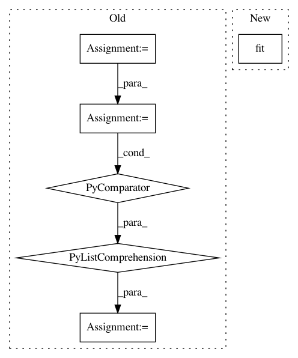

e52e9c8d7536b6315da655164951060642a52707,sklearn/manifold/tests/test_t_sne.py,,test_barnes_hut_angle,#,609
Before Change
random_state = check_random_state(0)
distances = random_state.randn(n_samples, n_features)
distances = distances.astype(np.float32)
distances = abs(distances.dot(distances.T))
np.fill_diagonal(distances, 0.0)
params = random_state.randn(n_samples, n_components)
P = _joint_probabilities(distances, perplexity, verbose=0)
kl_exact, grad_exact = _kl_divergence(params, P, degrees_of_freedom,
n_samples, n_components)
k = n_samples - 1
bt = BallTree(distances)
distances_nn, neighbors_nn = bt.query(distances, k=k + 1)
neighbors_nn = neighbors_nn[:, 1:]
distances_nn = np.array([distances[i, neighbors_nn[i]]
for i in range(n_samples)])
assert np.all(distances[0, neighbors_nn[0]] == distances_nn[0]),\
abs(distances[0, neighbors_nn[0]] - distances_nn[0])
P_bh = _joint_probabilities_nn(distances_nn, neighbors_nn,
perplexity, verbose=0)
After Change
n_samples, n_components)
n_neighbors = n_samples - 1
distances_csr = NearestNeighbors().fit(data).kneighbors_graph(
n_neighbors=n_neighbors, mode="distance")
P_bh = _joint_probabilities_nn(distances_csr, perplexity, verbose=0)
kl_bh, grad_bh = _kl_divergence_bh(params, P_bh, degrees_of_freedom,
In pattern: SUPERPATTERN
Frequency: 4
Non-data size: 6
Instances
Project Name: scikit-learn/scikit-learn
Commit Name: e52e9c8d7536b6315da655164951060642a52707
Time: 2019-09-18
Author: tom.dupre-la-tour@m4x.org
File Name: sklearn/manifold/tests/test_t_sne.py
Class Name:
Method Name: test_barnes_hut_angle
Project Name: thoughtworksarts/EmoPy
Commit Name: a94f7b93251013d51d9918c27ab2569eb526a494
Time: 2018-02-14
Author: puneethp@thoughtworks.com
File Name: examples/timedelay_conv_model.py
Class Name:
Method Name:
Project Name: ntucllab/libact
Commit Name: cb347641837feb9f651038c2f88317563a347627
Time: 2015-12-17
Author: yangarbiter@gmail.com
File Name: libact/models/svm.py
Class Name: SVM
Method Name: train
Project Name: DistrictDataLabs/yellowbrick
Commit Name: 58b309931088fa130e5320ca2850a7b1fc5ad7f2
Time: 2018-03-02
Author: pbs929@users.noreply.github.com
File Name: yellowbrick/features/base.py
Class Name: DataVisualizer
Method Name: fit